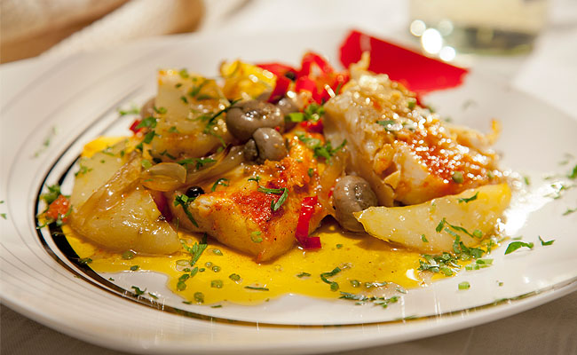

Bacalhau

The Portuguese national dish, bacalhau, or salt cod, has its origins on the Grand Banks of the North Atlantic, where the Portuguese once played a major role in manning the fishing boats. A flavorful fish, to say the least, there are supposedly at least 365 ways to prepare it, including the 25 served up at the vault-ceilinged Casa do Bacalhau, said to be in the former stables of a duke’s palace in the eastern part of Lisbon. It’s difficult to find any Lisbon restaurant that doesn’t serve some form of it—the most popular is probably bacalhau a bras, a stir fry of cod, rice, scrambled eggs, and onions, garnished with black olives.
Work of Paul Truong Nguyen for CS545 Fall 2016. All images and text were taken from other websites as this was a class assignment, solely used for educational purposes only.